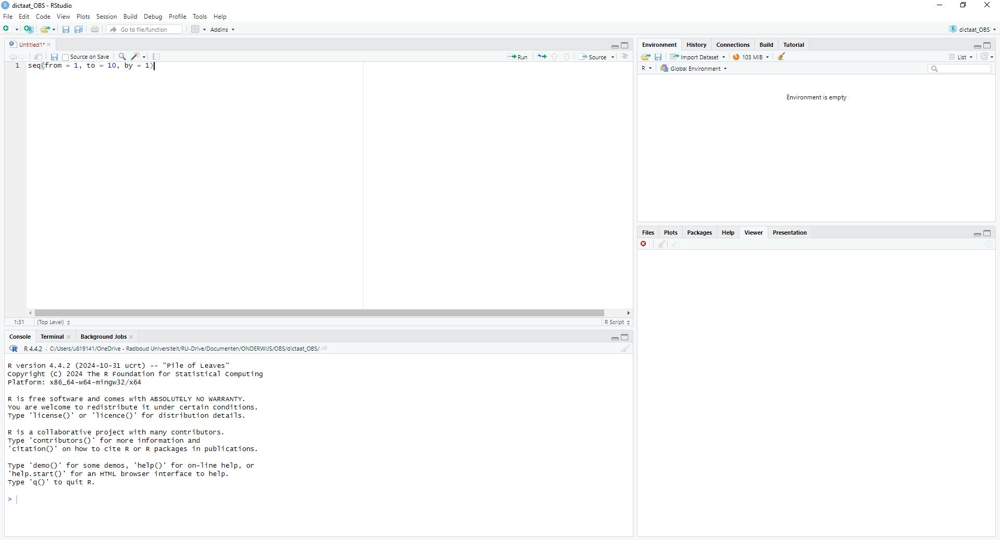

seq(from = 1, to = 10, by = 1) [1] 1 2 3 4 5 6 7 8 9 10In deze cursus leer je om data-analyses uit te voeren met R. R is een programmeertaal om data-analyse (datavisualisaties, statistische analyses) mee uit te voeren. In feite is het een grote verzameling functies die je kunt inzetten om data te analyseren. Net als elke taal kent ook R bepaalde regels (de grammatica van de taal). Leren werken met R betekent dus dat je je die regels eigen moet maken.
Het softwarepakket R is tegenwoordig de standaard voor data-analyse in taalkundig onderzoek. Het grote voordeel van R is dat veel professionele onderzoekers steeds weer nieuwe pakketten maken voor specifieke statistische of data-analytische functies.1 Daarnaast is het gratis te downloaden voor verschillende computerplatforms. Je kunt R downloaden als programma op je computer. Je kunt direct in het programma R werken. Als je het opent, krijg je een scherm te zien, de console, waarin je code kunt typen. Wij gebruiken echter het programma RStudio, dat een wat fijnere gebruikersinterface levert dan R zelf, en dus wat vriendelijker is voor (beginnende) gebruikers.
1 Bodo Winter geeft in sectie 0.2 van Winter (2019) nog een aantal belangrijke voordelen.
Op de computers in het ESC horen R en RStudio al aanwezig te zijn. Om het op je eigen computer te installeren: ga naar https://posit.co/download/rstudio-desktop/#download en kies het installatieprogramma dat bij jouw computer past. Als je R nog niet hebt, installeer dat dan ook, vanaf die pagina of anders via https://cran.rstudio.com of http://cran.r-project.org.
Wanneer je RStudio opent, opent zich een programma met een aantal vensters (3 of 4), zoals je kunt zien in Figuur 2.1. Linksonder vind je de console van R (wanneer je vanuit het programma R zou werken, krijg je alleen dit venster te zien). Dat is waar alle code die je gaat maken zal worden uitgevoerd. Linksboven zie je een script met daarin 1 regel code. In het script kun je als in een kladblok code schrijven en die vervolgens uitproberen door deze naar de console te sturen. Dit doe je door de relevante code te selecteren en op ctrl + Enter (Cmd + Enter op een Mac) te drukken. Wanneer je je cursor op een regel hebt staan, wordt op deze manier alle code op die regel (en bijbehorende regels) uitgevoerd.

Het venster rechtsboven geeft een overzicht van alle data (datatabellen en vectoren, zie het volgende hoofdstuk) die voor R beschikbaar zijn om bewerkingen op uit te voeren. Dit venster is nu nog leeg. Hetzelfde geldt voor het venster rechtsonder. Dit venster kun je gebruiken om gemaakte grafieken (plots) te bekijken, inzicht te krijgen in je bestanden en ook de packages die je hebt geïnstalleerd (zie hieronder). Niet onbelangrijk: hier vind je ook de help-functie.
Omdat het waarschijnlijker makkelijker is om een overzicht te krijgen van RStudio met bewegend beeld kun je deze video https://youtu.be/FIrsOBy5k58 bekijken voor een korte rondleiding.
Zoals gezegd is R in feite een grote verzameling functies die je kunt inzetten om data te analyseren. Functies koppelen een bepaalde input aan een bepaalde output. Neem bijvoorbeeld de functie seq(): gegeven een beginpunt, een eindpunt en een stapgrootte geeft deze functie je een reeks getallen. In onderstaand voorbeeld is het beginpunt gegeven als 1, het eindpunt als 10 en de stapgrootte als 1. Het resultaat is een reeks gehele getallen van 1 tot 10.
seq(from = 1, to = 10, by = 1) [1] 1 2 3 4 5 6 7 8 9 10Wanneer we de stapgrootte veranderen naar 2, krijgen we niet 10 getallen maar 5 (alle oneven getallen onder de 10).
seq(from = 1, to = 10, by = 2)[1] 1 3 5 7 9Veranderen we vervolgens ook het beginpunt naar 2 dan krijgen we 5 even getallen:
seq(from = 2, to = 10, by = 2)[1] 2 4 6 8 10Deze voorbeelden laten zien dat de uitkomst (output) van de functie dus volledig wordt bepaald door wat je erin stopt (de input). De functie seq() vraag om drie argumenten from, to en by. Ieder argument heeft in principe een vaste plek in de functie. Wanneer we die vaste volgorde aanhouden kunnen we de namen van de argumenten weglaten:
seq(1, 10, 1) [1] 1 2 3 4 5 6 7 8 9 10Wanneer je bekend raakt met bepaalde functies, zul je er op gegeven moment waarschijnlijk voor kiezen om de namen van de argumenten weg te laten. Dit scheelt namelijk veel typewerk. Het maakt je code mogelijk wel minder leesbaar voor buitenstaanders (en voor jezelf). In dit dictaat zullen we in de meeste gevallen bij het eerste gebruik van een functie de argumenten bij naam noemen, om ze bij vervolgd gebruik weg te laten.
Wanneer we de namen wel gebruiken, kunnen we er ook voor kiezen om de argumenten in een andere volgorde neer te zetten. Door de namen weet R toch wat we bedoelen.
seq(by = 1, from = 1, to = 10) [1] 1 2 3 4 5 6 7 8 9 10Laten we de namen weg en gebruiken we een andere volgorde, krijgen we een andere output:
seq(1, 1, 10)[1] 1In dit geval interpreteert R de argumenten in de standaardvolgorde.
Het is voor elke functie dus belangrijk om te weten wat de benodigde argumenten zijn en in welke volgorde ze worden verwacht. De argumenten staan altijd tussen () achter de functienaam en worden gescheiden door een komma. Tussen de naam van het argument en de waarde die je wilt meegeven zet je een =-teken.
| functienaam(argument1, argument2, argument3) |
|---|
seq(from = , to = , by = ) |
Wanneer je wilt achterhalen hoe de structuur van een functie in elkaar zit, kun je de help-functie in R gebruiken. Door een vraagteken voor de functienaam te zetten, verschijnt in RStudio rechtsonder informatie over de functie.
?seq()Je zult zien dat veel functies naast de verplichte argumenten ook default argumenten hebben. Dit zijn argumenten die een standaardwaarde hebben en dus niet door de gebruiker hoeven te worden gegeven, maar die je eventueel wel zou kunnen aanpassen.
Niet alle functies hebben argumenten met een naam. De functie c() waarmee we dingen kunnen samenvoegen tot een geheel is bijvoorbeeld een veelgebruikte functie zonder argumentnamen:
c("Nederland", 1988, "plek 1")[1] "Nederland" "1988" "plek 1" Deze functie c() kun je ook gebruiken om meerdere waarden als argument van een functie mee te geven. Neem als voorbeeld de functie round(). Deze functie rondt getallen af op een aangegeven aantal decimalen (digits). In onderstaand voorbeeld wordt er afgerond op twee decimalen:
round(4.246, digits = 2)[1] 4.25Met c() is het mogelijk om meerdere getallen tegelijk te laten afronden (in dit geval op 1 decimaal):
round(c(4.246, 5.628, 9.463), 1)[1] 4.2 5.6 9.5In deze cursus leer je werken met zo’n 100 veelgebruikte functies in R. Het is belangrijk om voor jezelf een goed overzicht te houden van deze functies. Werk hier actief aan door een eigen codeboek aan te maken.
R komt standaard met een hele verzameling aan functies die je kunt gebruiken. Dit noemen we ook wel base R. Soms wil je echter meer. In dat geval kun je gebruik maken van zogenaamde aanvullende packages. Een package is een verzameling functies die meestal gemaakt zijn om één bepaalde taak goed uit te kunnen voeren, bijv. het maken van grafieken of het analyseren van teksten. Om deze te kunnen gebruiken moet je deze packages eerst installeren op je computer en vervolgens ook aanroepen in je R-sessie. Tijdens deze cursus zullen we veelvuldig gebruik maken van het package tidyverse. Dat is eigenlijk een verzameling packages die helpen bij verschillende onderdelen van data-analyse. Het tidyverse is inmiddels zo succesvol geworden dat het een soort dialect binnen de programmeertaal R is geworden. Wanneer je het package tidyverse installeert en aanroept dan roep je meteen alle packages die daaronder vallen ook aan.
Packages installeer je met behulp van de functie install.packages(). Tussen de haken zet je de naam van het package tussen aanhalingstekens.
install.packages("tidyverse") N.B. je hoeft een package maar één keer op je computer te installeren. Zet daarom, nadat je de installatie hebt voltooid, een # voor de regel met install.packages() of verwijder de regel met deze code. Als je de regel laat staan kan dat later problemen opleveren. Door de # zal R de regel negeren wanneer je het script nog een keer uitvoert. In RStudio kun je in het window rechtsonder onder het tabblad packages zien welke packages er geïnstalleerd zijn op jouw computer. Je vindt daar ook een optie om packages te installeren.
Een package installeer je dus maar één keer, maar om de functies in het package te kunnen gebruiken moet je het package wel elke R-sessie opnieuw activeren. Dit doe je met behulp van de functie library() waarin je de naam van het te gebruiken package invult zonder aanhalingstekens. Dit moet je dus elke keer uitvoeren aan het begin van een nieuwe R-sessie, anders zal R klagen de functies uit het package niet te kennen. Om de functies uit het tidyverse te kunnen gebruiken, type je dus:
library(tidyverse)Je kunt deze functie voor meerdere packages achter elkaar uitvoeren. Let hierbij wel op dat de volgorde waarin je de packages aanroept een effect kan hebben. Wanneer er in verschillende packages een functie met dezelfde naam zit, dan zal de R de functie gebruiken zoals die in het laatst aangeroepen package gedefinieerd is. De functie in het eerder aangeroepen package zal dan gemaskeerd worden. R geeft je hier ook een waarschuwing over. Wanneer je uit een geïnstalleerd package maar één specifieke functie wilt gebruiken, dan kun je dit probleem omzeilen door het package niet aan te roepen met library(), maar door de notatie packagenaam::functienaam te gebruiken:
janitor::clean_names()In het bovenstaande voorbeeld kun je de functie clean_names uit het package janitor gebruiken zonder dat alle andere functies uit het package actief worden en mogelijk functies uit andere packages maskeren. Je moet het package hiervoor natuurlijk wel geïnstalleerd hebben op je computer.
Het is verstandig om aan het begin van elk R-script een blokje te maken waarin je alle benodigde packages aanroept met library(). Dit is vooral ook handig voor lezers van je script. Die weten dan meteen wat ze kunnen verwachten en welke packages ze eventueel nog moeten installeren.
R (base R) verder uitgelegd. Ter voorbereiding op het eerste practicum is het prettig om vast wat commando’s te proberen uit dit hoofdstuk. Maak hiervoor een nieuw script aan in RStudio (via het menu File > New File > R Script of de sneltoetsen Ctrl + Shift + N (Cmd + Shift + N op een Mac)).2 Werk om een gevoel te krijgen bij hoe R werkt, nu hoofdstuk 1 door t/m sectie 1.4. Typ de commando’s in de grijze vakken over en voer ze uit. In sectie 1.2 doe je dit direct in de R-console, vanaf sectie 1.3 (en in alle volgende practica!) in een script. Zie sectie 1.15 voor handige shortcuts die je hierbij kunt gebruiken. Controleer steeds of je dezelfde output krijgt als in het boek. Toegegeven, het letterlijk overtypen van de commando’s uit het boek voelt misschien een beetje raar, maar het is dé manier om gevoel te krijgen bij hoe R werkt en waar je op moet letten (zie ook sectie 1.16 voor belangrijke adviezen op dit gebied). In de practica krijg je nog tijd genoeg om het allemaal zelf uit te vinden.2 Je kunt eventueel ook https://rdrr.io/snippets gebruiken voor het uitvoeren van R-code, mocht de installatie op je eigen computer niet werken. We kunnen dan tijdens een practicum proberen R en RStudio werkend te krijgen op je computer.